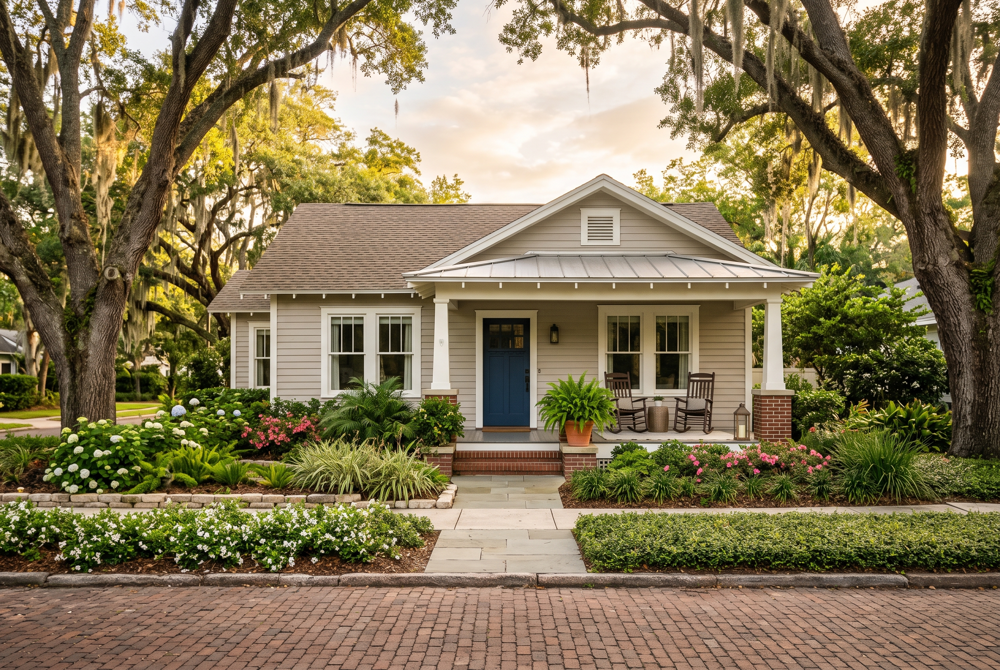

Winter Park
Orange County, incorporated in 1887 around Park Avenue and its own six-lake chain — the zip code most buyers mean (32789) sits inside the actual city line; the other Winter Park zip code (32792) mostly does not.

Orientation
Winter Park sits just north of downtown Orlando, built around a chain of six lakes — Virginia, Osceola, Maitland, Mizell, Nina, and Minnehaha — linked by narrow canals dug by hand in the 1890s to float logs to a lakeside sawmill. Park Avenue, the city’s brick-lined shopping and dining street, and Rollins College sit at its center. The incorporated city runs about 10 square miles.
Character
Winter Park was platted in 1881 by New England transplants Loring Chase and Oliver Chapman as a planned winter retreat, incorporated as a town in October 1887, and re-incorporated as a city in 1925. It had 29,795 residents at the 2020 census. Rollins College, four years older than the town’s own charter, opened in 1885 as Florida’s first four-year college. The Scenic Boat Tour, a 25-passenger cruise through the canal system, has run continuously since 1938.
Winter Park also has two zip codes, and they are not the same place. 32789 is inside the actual city line: Park Avenue, the lake chain, brick streets, and access to city services like the library and public pools. 32792 carries a Winter Park mailing address assigned by the post office, but a large share of it sits in unincorporated Orange or Seminole County, outside city limits and outside those city services. When someone says “Winter Park,” it’s worth asking which one they mean.
Schools
Both zip codes fall under Orange County Public Schools — the city does not run a separate school district of its own, despite what some listing sites imply. Addresses inside 32789 typically zone to Brookshire Elementary, Glenridge Middle School (opened 1955, later relocated to a new campus in neighboring Baldwin Park), and Winter Park High School, which has carried an International Baccalaureate Diploma Programme since 1985 and runs a separate ninth-grade campus in addition to its main one. Addresses in 32792 split across different elementary and middle feeders, including Lakemont Elementary and Maitland Middle, and don’t automatically land in the same high school zone.
Zone lines don’t track the zip code cleanly — check a specific address against OCPS’s own zoning tool before assuming, not after.
Fit
Winter Park suits someone who wants an established, walkable place with a real downtown, and is willing to pay for brick streets and proximity to Park Avenue and Rollins — that premium concentrates inside 32789. It doesn’t suit someone who assumes a Winter Park mailing address guarantees any of that; a lot of 32792 is unincorporated county land with a different price point, different schools, and none of the city services that come with an actual Winter Park address.
Before you buy here
Confirm whether a specific address is actually inside city limits, not just carrying a Winter Park zip: it changes the taxes, the services, and the school zone. Much of the housing stock inside the city predates 1960, and a meaningful share sits in one of the city’s designated local historic districts, where exterior changes go through the Historic Preservation Board’s Certificate of Review process before a permit is issued — worth checking before assuming a renovation plan is straightforward.
Market snapshot
- Median sale price
- $880,809
- Median days on market
- 37 days
- Year over year, price
- +18.5%
As of September 2026. Source: Redfin, trailing 3 months.
Read this carefully
These figures come from one fixed source, checked each quarter, not averaged across providers. Redfin’s “Winter Park, FL” page covers the whole city, both 32789 and 32792, which blends the Park Avenue core with the lower-priced, partly-unincorporated area on the city’s mailing-address fringe. Other public sources report different numbers for the same period because they draw on different boundaries, time windows, and underlying data. That’s disclosed here, not smoothed over.
Market context only. Not an appraisal, and not a guarantee of price, timeline, or outcome for any specific home.
Considering Winter Park
We’ll tell you whether it fits.
Call, or send a note, and we’ll tell you whether Winter Park actually fits what you’re looking for — not just whether something’s available.
Direct line